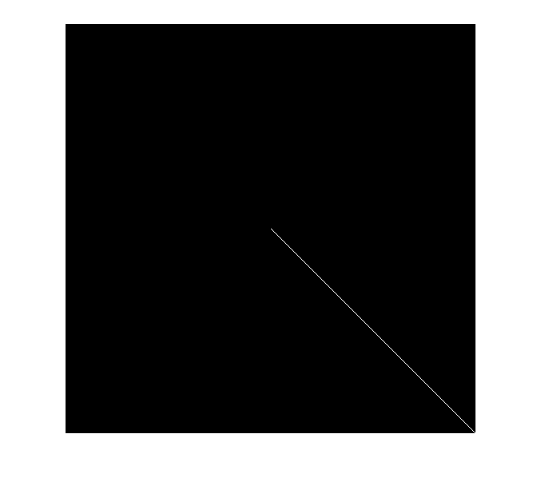

clc;
clear all;
close all;
dirName='D:\matlab2011a1\matlab2011a\bin\PRML657\Ass1\TrainCharacters\1';
imageFiles=dir(fullfile(dirName,'*.jpg'));
numel(imageFiles)
img=imread(strcat('D:\matlab2011a1\matlab2011a\bin\PRML657\Ass1\TrainCharacters\1\',imageFiles(1).name));
imMean_E=imresize(img,0.25);
for i=1:numel(imageFiles)
img=imread(strcat('D:\matlab2011a1\matlab2011a\bin\PRML657\Ass1\TrainCharacters\1\',imageFiles(i).name));
img=imresize(img,0.25);
imMean_E=imadd(double(imMean_E),double(img));
end
imMean_E=imMean_E/200;
imshow(imMean_E);
imMean_E=imMean_E(:);
imCovariance_E=zeros(1024,1024);
for i=1:numel(imageFiles)
img=imread(strcat('D:\matlab2011a1\matlab2011a\bin\PRML657\Ass1\TrainCharacters\1\',imageFiles(i).name));
img=imresize(img,0.25);
img=img(:);
imgXU_E=imsubtract(double(img),double(imMean_E));
imCovariance_E=imCovariance_E+(imgXU_E)*(imgXU_E');
end
imCovariance_E=imCovariance_E/200;
imCovariance_E=imCovariance_E+0.37.*eye(1024,1024);
detCovariance_E=det(imCovariance_E)
figure, imshow(imCovariance_E)
dirName='D:\matlab2011a1\matlab2011a\bin\PRML657\Ass1\TrainCharacters\2';
imageFiles=dir(fullfile(dirName,'*.jpg'));
numel(imageFiles)
img=imread(strcat('D:\matlab2011a1\matlab2011a\bin\PRML657\Ass1\TrainCharacters\2\',imageFiles(1).name));
imMean_C=imresize(img,0.25);
for i=1:numel(imageFiles)
img=imread(strcat('D:\matlab2011a1\matlab2011a\bin\PRML657\Ass1\TrainCharacters\2\',imageFiles(i).name));
img=imresize(img,0.25);
imMean_C=imadd(double(imMean_C),double(img));
end
imMean_C=imMean_C/200;
figure, imshow(imMean_C);
imMean_C=imMean_C(:);
imCovariance_C=zeros(1024,1024);
for i=1:numel(imageFiles)
img=imread(strcat('D:\matlab2011a1\matlab2011a\bin\PRML657\Ass1\TrainCharacters\2\',imageFiles(i).name));
img=imresize(img,0.25);
img=img(:);
imgXU_C=imsubtract(double(img),double(imMean_C));
imCovariance_C=imCovariance_C+(imgXU_C)*(imgXU_C');
end
imCovariance_C=imCovariance_C/200;
imCovariance_C=imCovariance_C+0.37*eye(1024,1024);
detCovariance_C=det(imCovariance_C)
figure, imshow(imCovariance_C)
dirName='D:\matlab2011a1\matlab2011a\bin\PRML657\Ass1\TrainCharacters\3';
imageFiles=dir(fullfile(dirName,'*.jpg'));
numel(imageFiles)
img=imread(strcat('D:\matlab2011a1\matlab2011a\bin\PRML657\Ass1\TrainCharacters\3\',imageFiles(1).name));
imMean_I=imresize(img,0.25);
for i=1:numel(imageFiles)
img=imread(strcat('D:\matlab2011a1\matlab2011a\bin\PRML657\Ass1\TrainCharacters\3\',imageFiles(i).name));
img=imresize(img,0.25);
imMean_I=imadd(double(imMean_I),double(img));
end
imMean_I=imMean_I/200;
figure, imshow(imMean_I);
imMean_I=imMean_I(:);
imCovariance_I=zeros(1024,1024);
for i=1:numel(imageFiles)
img=imread(strcat('D:\matlab2011a1\matlab2011a\bin\PRML657\Ass1\TrainCharacters\3\',imageFiles(i).name));
img=imresize(img,0.25);
img=img(:);
imgXU_I=imsubtract(double(img),double(imMean_I));
imCovariance_I=imCovariance_I+(imgXU_I)*(imgXU_I');
end
imCovariance_I=imCovariance_I/200;
imCovariance_I=imCovariance_I+0.5*eye(1024,1024);
detCovariance_I=det(imCovariance_I)
figure, imshow(imCovariance_I)
ans =
200
detCovariance_E =
2.2379e-013
Warning: Image is too big to fit on screen; displaying at 50%
ans =
200
detCovariance_C =
1.9778e-009
Warning: Image is too big to fit on screen; displaying at 50%
ans =
200
detCovariance_I =
3.0269e-008
Warning: Image is too big to fit on screen; displaying at 50%
imMean_Pool=(imMean_E+imMean_C+imMean_I)/3;
imCovariance_Pool=zeros(1024,1024);
for i=1:numel(imageFiles)
img=imread(strcat('D:\matlab2011a1\matlab2011a\bin\PRML657\Ass1\TrainCharacters\1\',imageFiles(i).name));
img=imresize(img,0.25);
img=img(:);
imgXU_Pool=imsubtract(double(img),double(imMean_Pool));
imCovariance_Pool=imCovariance_Pool+(imgXU_Pool)*(imgXU_Pool');
end
for i=1:numel(imageFiles)
img=imread(strcat('D:\matlab2011a1\matlab2011a\bin\PRML657\Ass1\TrainCharacters\2\',imageFiles(i).name));
img=imresize(img,0.25);
img=img(:);
imgXU_Pool=imsubtract(double(img),double(imMean_Pool));
imCovariance_Pool=imCovariance_Pool+(imgXU_Pool)*(imgXU_Pool');
end
for i=1:numel(imageFiles)
img=imread(strcat('D:\matlab2011a1\matlab2011a\bin\PRML657\Ass1\TrainCharacters\3\',imageFiles(i).name));
img=imresize(img,0.25);
img=img(:);
imgXU_Pool=imsubtract(double(img),double(imMean_Pool));
imCovariance_Pool=imCovariance_Pool+(imgXU_Pool)*(imgXU_Pool');
end
imCovariance_Pool=imCovariance_Pool/600;
imCovariance_Pool=imCovariance_Pool+0.25*eye(1024,1024);
detCovariance_Pool=det(imCovariance_Pool)
figure, imshow(imCovariance_Pool)
detCovariance_Pool =
504.1085
Warning: Image is too big to fit on screen; displaying at 50%
imCovariance_E_NDZ=(eye(1024,1024)).*imCovariance_E;
imCovariance_C_NDZ=(eye(1024,1024)).*imCovariance_C;
imCovariance_I_NDZ=(eye(1024,1024)).*imCovariance_I;
imCovariance_E_NDZ=imCovariance_E_NDZ-0.21*eye(1024,1024);
imCovariance_C_NDZ=imCovariance_C_NDZ-0.225*eye(1024,1024);
imCovariance_I_NDZ=imCovariance_I_NDZ-0.19*eye(1024,1024);
detCovariance_E_NDZ=det(imCovariance_E_NDZ)
detCovariance_C_NDZ=det(imCovariance_C_NDZ)
detCovariance_I_NDZ=det(imCovariance_I_NDZ)
figure, imshow(imCovariance_E_NDZ);
figure, imshow(imCovariance_C_NDZ);
figure, imshow(imCovariance_I_NDZ);
detCovariance_E_NDZ =
4.2687e-009
detCovariance_C_NDZ =
2.8655e-004
detCovariance_I_NDZ =
1.8523e-008
Warning: Image is too big to fit on screen; displaying at 50%
Warning: Image is too big to fit on screen; displaying at 50%
Warning: Image is too big to fit on screen; displaying at 50%
imCovariance_Pool_NDZ=(eye(1024,1024)).*imCovariance_Pool;
imCovariance_Pool_NDZ=imCovariance_Pool_NDZ-0.14*eye(1024,1024);
detCovariance_Pool_NDZ=det(imCovariance_Pool_NDZ)
figure, imshow(imCovariance_Pool_NDZ)
detCovariance_Pool_NDZ =
3.2193e-006
Warning: Image is too big to fit on screen; displaying at 50%

figure, imshow(eye(1024,1024));
Warning: Image is too big to fit on screen; displaying at 50%
